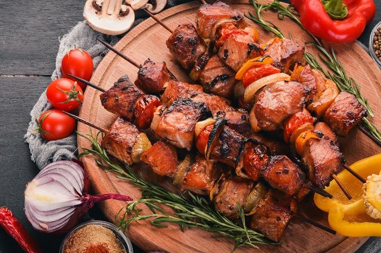

Шашлык

Описание рецепта
Отличный способ замариновать свинину, чтобы она осталась сочной даже после томления на углях.
Ингредиенты
- Свинина - 1,5 кг
- Лук репчатый маленький - 10-12 шт.
- Помидор крупный - 1 шт.
- Лимон - 0,5 шт.
- Соль - 1 ч. л.
- Перец молотый - 1 ч. л.
Шаги
- Подготовить продукты для шашлыка из свинины.
Лук нарезать кольцами, помидоры нарезать кружочками.
- Мясо промыть и обсушить. Нарезать небольшими кусочками, размером со спичечный коробок.
- Уложить на дно емкости слой мяса, сверху посолить, поперчить.
- Выложить на свинину кольца лука.
- На лук выложить кружочки помидора. Сбрызнуть лимоном.
- Повторять процедуру, пока не будет уложено все мясо.
Накрыть и убрать свинину с луком и помидорами мариноваться в холодильник минимум на 8 часов.
Можно периодически встряхивать емкость, чтобы соки
равномерно распределились и мясо лучше замариновалось.
- Пожарить шашлык из свинины на мангале.
- Шашлык из свинины готов. Налить бокал вина (или чего вы там хотите)
и наслаждаться отменным мясом в хорошей компании.
Приятного аппетита!
На главную